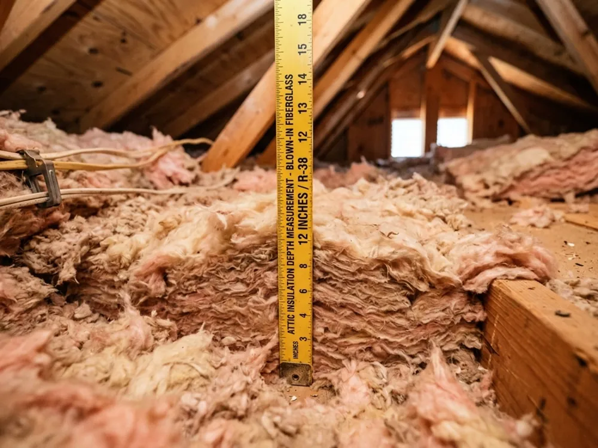

Blown in insulation
Loose fiberglass blown across the attic floor to an even depth, so it fills around pipes, wires, and framing.
- Best forAttics with thin or settled insulation and an open floor
- What you getThe depth in inches, the R-value you reach, and the price in writing
- Good to knowBlown in fiberglass does not stop air leaks, so we seal gaps first